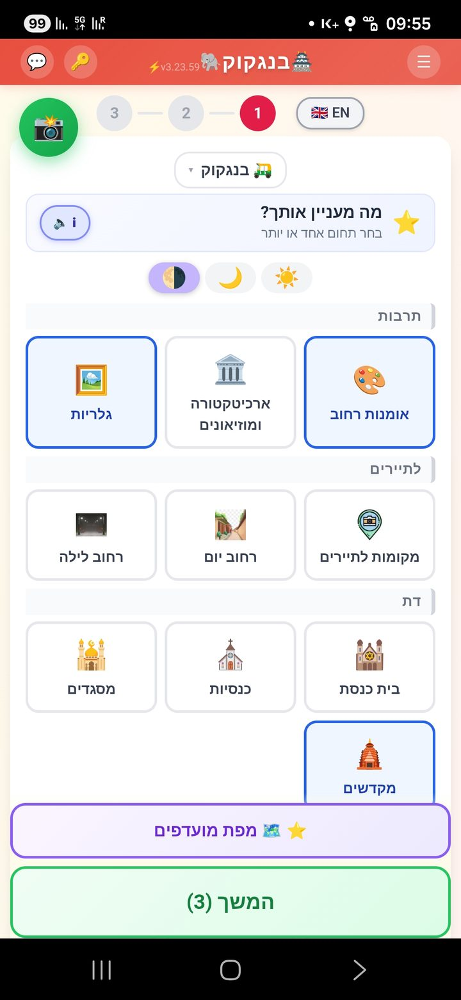
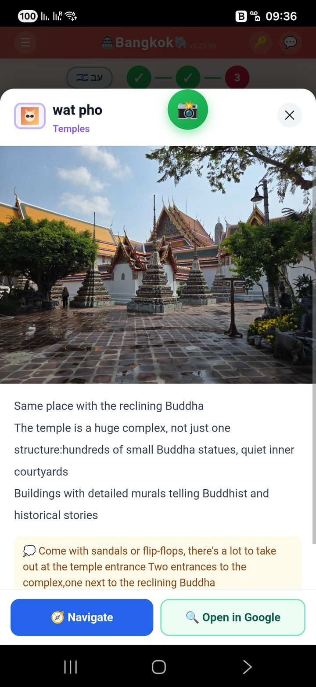
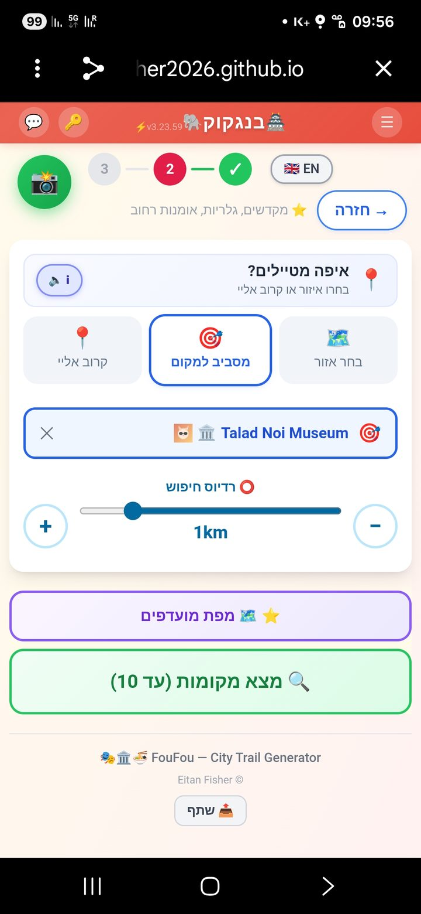
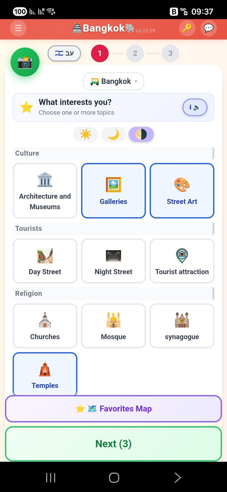
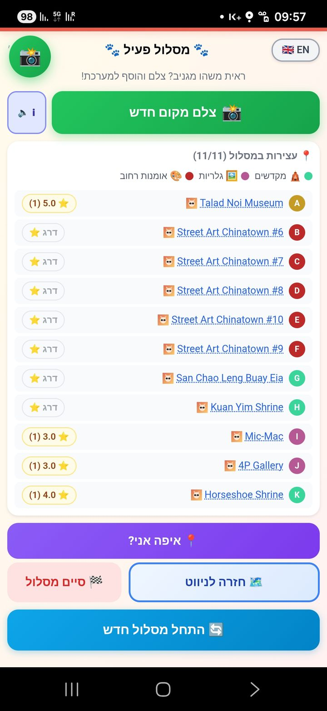
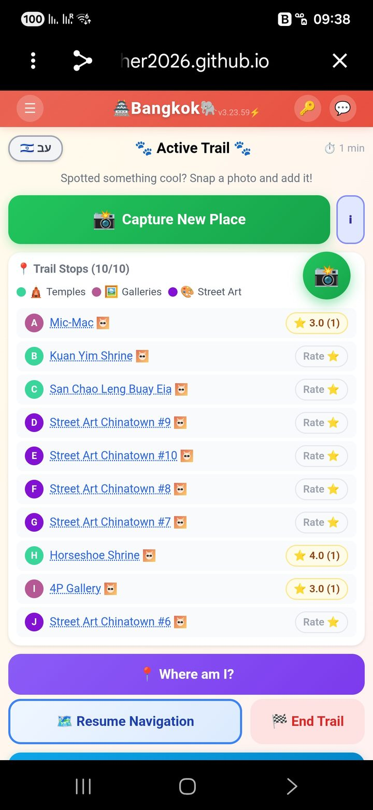
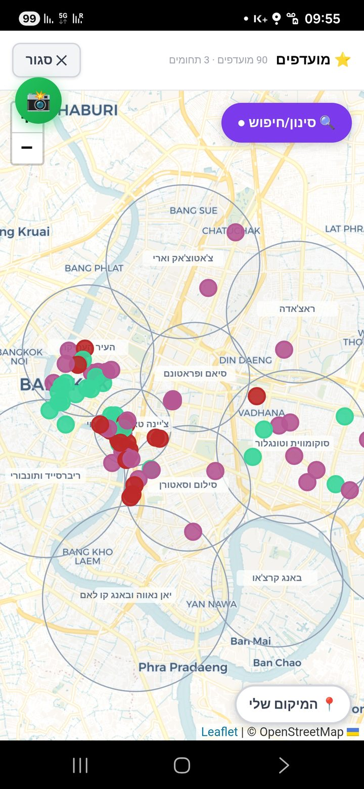
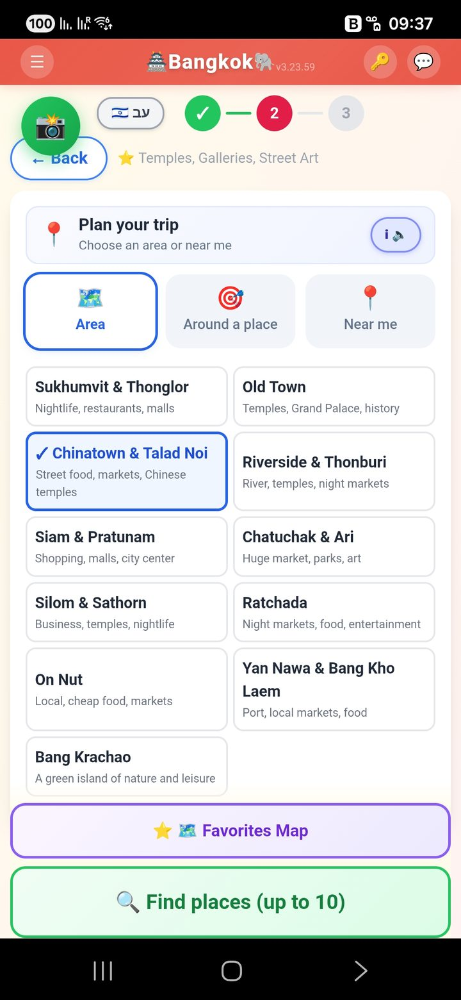
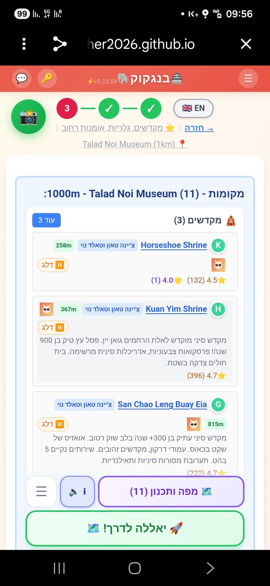
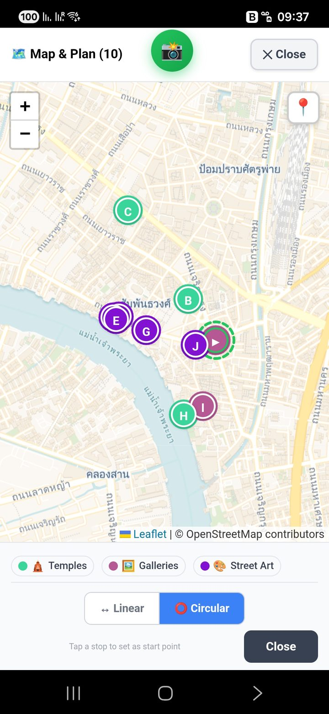

פופו עוזר לחברים שבאים לבקר להתנהל בעיר עצמאית — עם הידע שצברנו לאורך שנים. הטוב משני העולמות: המלצות אישיות + ניווט גוגל.
FouFou helps visiting friends explore a city on their own — armed with the knowledge we've gathered over the years. The best of both worlds: personal recommendations + Google navigation.
גוגל מצוין בניווט אבל לא תמיד נוח לתפעול. ניסיתי לקחת את הטוב משני העולמות — המלצות מסוננות לפי תחומי עניין, וקישור ישיר לגוגל מפות לניווט.
Google is great at navigation but not always easy to operate. I tried to combine the best of both — curated recommendations filtered by your interests, with a direct link to Google Maps for actual navigation.
בחר תחומי עניין — תרבות, אוכל, קפה, דת, קניות — וקבל מסלול שמתאים בדיוק לך.
Pick your interests — culture, food, coffee, religion, shopping — and get a trail tailored just for you.
מקומות שנבחרו בקפידה לפי ניסיון אישי, ולא רק אלגוריתם. עם דירוגי גוגל מהימנים.
Places hand-picked from real experience, not just an algorithm. Backed by reliable Google ratings.
כל מקום מקושר ישירות ל-Google Maps. אפס חיכוך בין החלטה לניווט.
Every place links straight to Google Maps. Zero friction between decision and direction.
ממשק דו-לשוני, מצב בהיר/כהה, ושמירת מועדפים אישית — הכל מקומי במכשיר שלך.
Bilingual interface, light/dark mode, and personal favorites — all stored locally on your device.
המערכת נכתבה כדי לעזור לחברים שבאים לבקר ורוצים מצד אחד להתנהל עצמאית, ומצד שני להיעזר בידע שצברנו לאורך תקופת השהות שלנו ושל אחרים בעיר.
גוגל כמקור מידע — לא מספיק ברור וקל לתפעול, אבל מצוין בניווט. ניסיתי לקחת את הטוב משני העולמות.
הייתי הרבה שנים מנהל מוצר ואני אוהב את עולם חוויית המשתמש. Claude Code הגיע לתודעתי ולעזרתי, תודות לפודקאסט ששמעתי של שאול אמסטרדמסקי, בסוף ינואר 2026.
עברתי 3 חודשים של חוויית רכבת הרים ממכרת, שבהם למדתי להכיר את היכולות המדהימות וגם החסרונות הלא מעטים של עולם ה-AI. היה מסע של למידה עמוקה, ואני שמח לחלוק איתכם את התוצר של אותו תהליך — את פופו.
The system was written to help friends who come to visit and want, on the one hand, to conduct themselves independently — and on the other hand, to use the knowledge we've accumulated during our stay and the stays of others in the city.
Google as a source of information is not clear enough or easy to operate, but excellent at navigation. I tried to take the best of both worlds.
I was a product manager for many years, and I love the world of user experience. Claude Code came to my attention — and to my aid — thanks to a podcast I heard by Shaul Amsterdamski, at the end of January 2026.
I went through three months of an addictive roller-coaster experience, during which I got to know the amazing capabilities and also the many shortcomings of the AI world. It was a journey of deep learning, and I'm happy to share with you the product of that process — FouFou.
ככה נראה זרימה אופיינית: בוחרים תחומי עניין, אזור בעיר, ומקבלים מסלול מוכן עם הסברים, ניווט ודירוגים.
Here's the typical flow: pick your interests, choose an area, and get a ready-made trail with descriptions, navigation, and ratings.










פופו רץ ישר מהדפדפן. בלי הורדה, בלי הרשמה.
FouFou runs straight from your browser. No download, no signup.
🐾 פתח את פופו 🐾 Open FouFou